Introduction
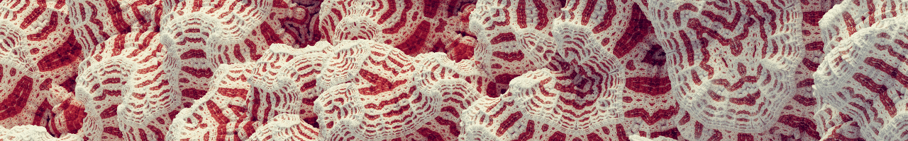
I believe that scientific knowledge has fractal properties; that no matter how much we learn, whatever is left, however small it may seem, is just as infinitely complex as the whole was to start with. That, I think, is the secret of the Universe.
-- Isaac Asimov
About Kaleo2
Kaleo2 is a fractal rendering toy with two main goals:
- It lets you explore a small but diverse family of fractals: the kaleidoscopic iterated function system (KIFS) fractals.
- It renders high-quality, photorealistic images and animations of these fractals with its built-in path tracer.
I made this program because there are very few fractal images on the internet that were rendered with a modern, photorealistic renderer, and standard 3D programs do not really support these exotic objects either. I have tried to keep it simple and to cut the settings down to the essentials, so that you can render a unique 4K wallpaper as quickly as possible.
Keep in mind, though, that with this type of fractal (and with this program in general) you cannot expect to control precisely which shapes appear. Even after years of using it, I have no intuition about which settings produce which structures.
Kaleidoscopic IFS Fractals
Fractals are geometric shapes with intricate patterns that repeat themselves at every scale (self-similarity). They have a fractional dimension, which makes them complex objects with fascinating properties. Fractals are not just a mathematical curiosity, they are also common in nature: the florets of a romanesco broccoli or the leaflets of a fern repeat the shape of the whole.
The kaleidoscopic IFS (Iterated Function System) fractal is one notable family. It can produce a wide range of classic shapes, such as the Menger sponge or the Sierpiński tetrahedron. You can imagine it as folding and mirroring space itself, combined with affine transformations (translation, rotation, scaling). These steps are applied again and again, and the result is a three-dimensional pattern reminiscent of the images in a kaleidoscope. The fractal was introduced and named by Knighty on the Fractal Forums in 2010.
Getting Started
- When the program starts, the Examples window opens with a few example projects (for example the Menger sponge and the Sierpiński pyramid). Click one to load it, or close the window to keep the default project. You can open it again with Help > View Examples.
- Move the camera in the viewport: drag with the left mouse button to orbit, use the mouse wheel to move closer, and double-click the fractal to aim at that point.
- Select a node in the Scene Tree and change its settings in the Properties window. The viewport restarts its refinement after every change, so you see the result right away.
- Set the resolution and the sample count of the final image in the Render Setup node.
- Click Render Current Frame in the Render panel. The image is saved into the Renders folder.
- Save your project with File > Save (Ctrl+S). Every rendered PNG contains its project as well, so you can reopen it from the image later.
If you get lost, Edit > Undo (Ctrl+Z) and the History window take you back to any earlier state.
How a Kaleo Fractal Is Built
The shape is described by the Fractal Geometry node and its children. For every point of space, the renderer repeats the following steps (one iteration) many times:
- Folding: each active fold plane mirrors the point to the side its normal points to. A point that is already on that side does not move. Fold Plane 1–7 start as the plane through the origin with its normal pointing along +Z, and the transformations under them rotate and move them. Only the first Fold Plane Count planes are used.
- Post Transform: the transformations under Post Transform rotate and move the folded point.
- Scaling: the point is scaled by the Iterative Scale.
The Pre Transform places the whole fractal in space, but it is also built into the iteration, so it changes the shape as well.
The number of iterations is the DE Iteration Count of the Fractal Setup node. After the last iteration, the renderer measures the distance to a small sphere (SDF Sphere Size). Scaled back, this gives an estimate of the distance to the fractal surface (a distance estimator, DE), which the ray marcher uses to find the surface.
The color comes from the folds as well: the Fractal Material node colors the surface by how often each fold plane mirrored the point.
Every transformation belongs to a channel of the Fractal Mixer, and the weight of that channel scales its effect. With the channel weights you can blend between different sets of transformations.
Animation
Almost every numeric setting is a curve that can be animated. Click the diamond next to a setting in the Properties window to insert a key at the current time, then change the time on the Timeline and set another value. The length of the animation, the range to render and the playback speed are set in the playback bar at the bottom of the Timeline. Render Frame Range renders the frames into an image sequence. The Time Remap node changes the speed of the whole animation.
Files and Folders
| Folder | Content |
|---|---|
| Renders | Rendered images and screenshots (PNG), image sequences in their own seq_... subfolder. |
| Projects | Project files saved with the renders (see Save Project File With Renders in the Options menu). |
| AppData | The application settings (settings.dat) and the window layout (imgui.ini). |
These folders are in Documents\Blod2o1\Kaleo2\. The example projects (Examples), the default project (AppData\default.fproj) and this help are next to the program.
- Project files (
.fproj) contain the whole scene, including the animation and the render settings. Open them with File > Open, or drag them onto the window. - Rendered PNG files contain their project, so File > Open from PNG (or dragging the PNG onto the window) restores the exact scene of an image.
- File > New starts again from the default project.
Keyboard and Mouse Shortcuts
| Shortcut | Effect |
|---|---|
| F1 | Opens this help. |
| Ctrl+Z / Ctrl+Y | Undo / Redo. |
| Ctrl+O | Opens a project. |
| Ctrl+S / Ctrl+Shift+S | Saves the project / saves it under a new name. |
| Space | Plays or pauses the animation in the viewport. |
| Mouse in the viewport | Moves the camera, see Viewport. |
| Mouse in the Timeline | Edits the curves, see Timeline Window. |
The keyboard shortcuts work while no text field is being edited.
UI Reference
User Interface

The heart of the user interface is the Scene Tree. Its nodes hold the settings of the render, the camera, the lights, and the shape and color of the fractal. Select a node in the Scene Tree to see and change its settings in the Properties window. Every change shows up in the viewport right away. Most settings are also curves: the Curves window lists all of them, and the Timeline shows and animates the selected ones.
You can move, rotate and zoom the camera in the viewport, and you can insert camera keys there as well.
To render an image, set the resolution and the sample count in the Render Setup node of the Scene Tree, then click Render Current Frame in the Render panel.
The windows can be docked anywhere: drag them by their tab. View > Animation Layout and View > Basic Layout restore the two built-in arrangements. The layout is saved when the program exits.
Menu Bar
File Menu
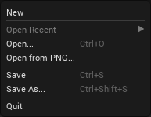
- New: starts a new project from the default project.
- Open Recent: the recently opened project files.
- Open... (Ctrl+O): opens a project file (
.fproj). - Open from PNG...: opens the project embedded in an image rendered by Kaleo2.
- Save (Ctrl+S): saves the project into its current file (asks for a file name the first time).
- Save As... (Ctrl+Shift+S): saves the project under a new name.
- Quit: closes the program.
You can also open a project or a rendered PNG by dragging it onto the window. Opening a project is an undo step too, so Undo brings back the previous scene.
Edit Menu
- Undo (Ctrl+Z) and Redo (Ctrl+Y) step through the History.
View Menu
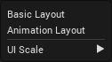
- Basic Layout: Scene Tree, Properties and Timeline side by side on the left, History and Curves on the right.
- Animation Layout: Scene Tree and Properties on the left, History on the right, a wide Timeline and the Curves window at the bottom.
- UI Scale: the size of the user interface (100%, 125%, 160%, 200%).
Options Menu
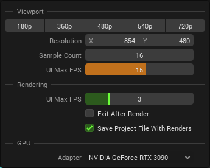
The settings of the program. They are not stored in the project. The settings of the rendered images are in the Render Setup node.
Viewport:
- Resolution and the resolution presets: the size of the viewport image. If the viewport is slow, lower it.
- Sample Count: the viewport stops refining the image after this many samples per pixel.
- UI Max FPS: frame rate limit of the user interface. Lower values leave more GPU time for the fractal. The field turns orange when a full render pass no longer fits into one UI frame.
Rendering:
- UI Max FPS: frame rate limit of the user interface while rendering. Lower values make rendering faster.
- Exit After Render: closes the program when the render is complete.
- Save Project File With Renders: also saves a project file (
.fproj) into the Projects folder for every rendered image and screenshot (once per image sequence). The project is embedded in every saved PNG anyway.
GPU:
- Adapter: if you have more than one GPU, select the one the program uses. It takes effect after a restart. (Using several GPUs at once is not supported.)
Help Menu
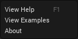
- View Help (F1): opens this help in your web browser.
- View Examples: opens the Examples window. Click an example to load it. Show at startup controls whether the window opens when the program starts.
- About: version and credits.
Viewport
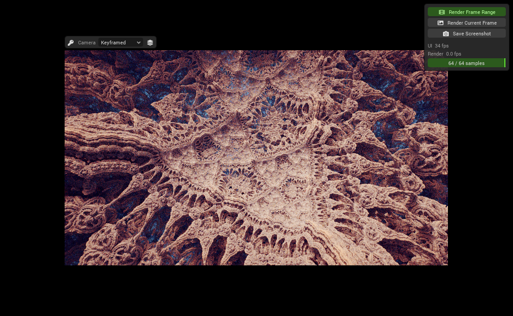
The viewport shows the fractal with the current settings. It renders progressively: the image starts noisy and gets cleaner with every pass until it reaches the Sample Count set in the Options menu. Any change restarts the refinement.
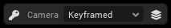
The toolbar above the image:
- Key button: inserts a camera key (Eye, LookAt, Roll, FOV, Focus Distance) at the current time of the Timeline, and switches the camera to Keyframed mode.
- Camera mode: Keyframed: the camera follows its keys on the Timeline. Free: the camera ignores its keys, so you can move it freely. If the camera has keys and you move it in the viewport, the mode switches to Free automatically.
- Visualize Fold Planes: see below.
Renders use the current camera mode: Render Current Frame renders exactly what the viewport shows, and for a camera animation with Render Frame Range, switch the camera back to Keyframed first.
Camera Controls
| Mouse | Effect |
|---|---|
| Left drag | Orbits the camera around the target (LookAt) point. |
| Middle drag | Moves the camera parallel to the image plane (pan). |
| Right drag | Zooms (changes the field of view). |
| Mouse wheel | Moves the camera toward or away from the target. |
| Left button held + mouse wheel | Moves the target along the view direction, the camera stays in place. |
| Left double-click on the fractal | Turns the camera to the clicked point, which becomes the new target and the focus distance. |
| Right double-click on the fractal | Sets the focus distance (DOF) to the clicked point; the target moves to this distance along the view direction. |
The camera cannot be moved while a final render is running.
Visualize Fold Planes
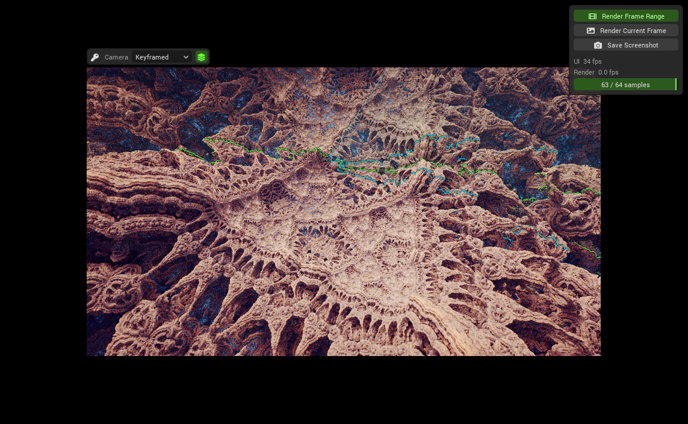
The layer button in the toolbar draws the fold (mirror) planes over the image. The colored lines show where a fold plane cuts the fractal. Hover over or select a Fold Plane (or its color node) in the Scene Tree to focus on that plane: the darkened side of the image is only its mirror image. With the overlay on, the Scene Tree shows the color of each plane next to its name. The overlay is only a display aid: it never appears in the rendered or saved images.
Render Panel
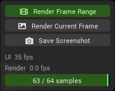
The panel in the top right corner of the viewport starts the final renders. They use the resolution and the sample count of the Render Setup node.
- Render Frame Range: renders every frame of the Render Range (set at the bottom of the Timeline) into an image sequence.
- Render Current Frame: renders the image of the viewport at the current time.
- Cancel: stops the running render (it replaces the two buttons above while rendering).
- Save Screenshot: saves the current viewport image as it is, even during a render.
Below the buttons:
- UI fps: the frame rate of the user interface.
- Render fps: how many full passes (one sample for every pixel) the renderer completes per second. It turns orange when a pass needs more than one UI frame; lowering UI Max FPS in the Options menu leaves more GPU time for the fractal.
- Samples: the progress of the current image.
- Frames: the progress of an image sequence (only while rendering).
While a final render runs, the other windows are hidden and the viewport shows the image being rendered.
Every image is saved into the Renders folder as an 8-bit RGB PNG file, with a name made from the date and time. An image sequence gets its own subfolder (seq_<date>) with numbered frames. The project is embedded in every PNG, so File > Open from PNG, or dragging the PNG onto the window, restores the scene of the image. If Save Project File With Renders is enabled in the Options menu, a project file with the same name is also saved into the Projects folder.
Scene Tree Window
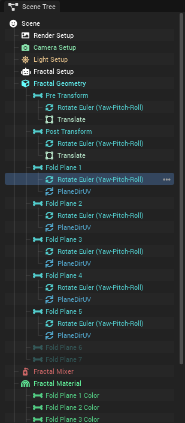
The Scene Tree holds all the nodes of the project: the render settings, the light, the camera, and the shape and color of the fractal.
- Render Setup
- Camera Setup
- Light Setup
- Fractal Setup
- Fractal Geometry
- Fractal Mixer
- Fractal Material
- Time Remap
Selecting: click a node to select it and its children; their settings appear in the Properties window and their curves are selected in the Curves window. Ctrl+click adds a node to the selection or removes it, Shift+click selects a range. When you hover over a node, its curves are highlighted in the Curves window and on the Timeline.
Fold planes above the Fold Plane Count of the Fractal Geometry node are not used; they are greyed out together with their color nodes. A transform that does not belong to Channel 1 of the Fractal Mixer shows its channel next to its name (Ch2, Ch3, Ch4).
Node menu: right-click a node, or click the ... button at the end of its row.
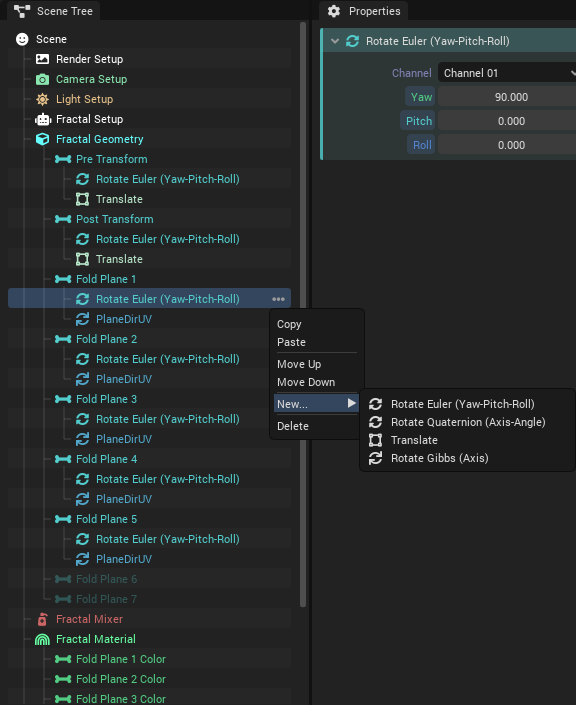
- New... (on the Pre Transform, Post Transform and Fold Plane nodes, and on transforms): adds a transform. On a transform, the new one is inserted after it.
- Copy / Paste: copies the settings of a node and pastes them into another node of the same type.
- Move Up / Move Down (transforms): changes the order of the transforms.
- Delete (transforms): deletes the transform.
- Merge All Transforms (Fractal Geometry): replaces the transforms of every bone with one Rotate Gibbs and one Translate transform that give the same result at the current time. The animation of the merged transforms is lost.
Reordering transforms: the order of the transforms matters. Drag a transform to move it, also into another bone:
- drop it on the upper or lower half of a transform to put it before or after that one,
- drop it on a bone row (Pre Transform, Post Transform, Fold Plane) to make it the first transform of that bone.
If only transforms are selected (Ctrl/Shift+click), they all move together.
Properties Window
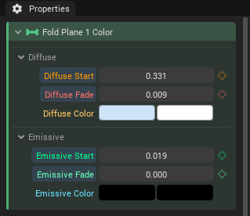
The settings of the selected nodes, one panel per node. The panels and the sections inside them can be collapsed by clicking their headers. The settings are described in the Node Reference.
- Changing a value: drag the field left or right, or double-click (Ctrl+click) it and type a value.
- Settings with a curve (animatable settings) have a diamond on the right. Click it to insert a key at the current time of the Timeline; a filled diamond means the setting is animated. An animated value cannot be edited in the Properties window: change its keys on the Timeline instead, or insert a new key and edit it there.
- Clicking the label of an animatable setting selects its curve on the Timeline; Ctrl+click adds it to the selection.
- Some settings recompile the shaders when they change (for example DE Iteration Count). This takes a moment.
Color curves. The Tone Curve of the Camera Setup node and the Ambient Color Multiplier of the Light Setup node are edited with a small curve editor in the panel, with separate red, green and blue curves. The Tone Curve has a fourth curve as well: the saturation as a function of the brightness. It works like the Timeline: drag the keys and the tangent knobs, double-click on a curve to add a key, and press Delete to remove the selected keys.
Timeline Window
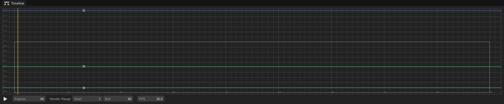
The Timeline shows the selected curves (select them in the Curves window, by clicking a setting label in the Properties window, or by selecting nodes in the Scene Tree). The horizontal axis shows the frames of the animation (the "time" of the curves is measured in frames). The thick orange-yellow vertical line is the current frame: drag it with the left mouse button to move through the animation, and the viewport shows that frame. While dragging, the frame number is shown next to the line; it can be a fraction of a frame unless you hold Shift. If the Time Remap node changes the timing, a thin red line shows the remapped frame that is actually rendered.
Navigation:
| Mouse | Effect |
|---|---|
| Middle drag | Pans the view. |
| Mouse wheel | Zooms vertically. |
| Ctrl + mouse wheel | Zooms in both directions. |
| Right-click | Context menu: Reset View fits the view to the selected curves. |
Editing:
| Mouse / key | Effect |
|---|---|
| Left-click on a key | Selects the key. Shift+click adds it to the selection. |
| Left drag on a key | Moves the selected keys. With Shift, the dragged key snaps to the grid. |
| Left drag on an empty area | Selects the keys inside a rectangle. With Shift, adds them to the selection. |
| Left drag on a tangent knob | Rotates the tangents of the selected keys. The knobs are at the ends of the tangents of the selected keys. With Shift, the angle snaps to 15 degree steps. |
| Left double-click on a curve | Adds a new key. |
| Left drag on the current frame line | Changes the current frame. With Shift, it snaps to the grid. |
| Left drag on a curve without keys | Changes its static value. With Shift, the value snaps to the grid. |
| Delete | Deletes the selected keys. |
| 0 / 1 | Sets the value of the selected keys to 0 or 1. With Ctrl, sets their tangent instead. |
The grid spacing depends on the zoom: zoom in for finer snapping steps.
Playback bar (at the bottom):
- Play/Pause (Space): plays the animation in the viewport.
- Frames: the length of the animation in frames.
- Render Range Start / End: the frames rendered by Render Frame Range (both ends included).
- FPS: the playback speed of the Timeline preview. It does not affect the rendered images.
These values are stored in the Render Setup node of the project.
Curves Window
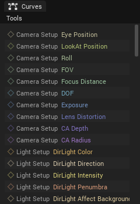
All the animatable settings of the project, listed by node. A filled diamond marks the animated curves.
- Click a curve to show it on the Timeline. Ctrl+click adds it to the selection or removes it, Shift+click selects a range.
- When you hover over a curve, it is highlighted on the Timeline and in the Properties window.
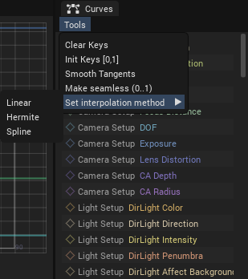
The Tools menu works on the selected curves:
- Clear Keys: removes all keys; the value at the current time becomes the static value.
- Init Keys [0,1]: replaces the keys with two keys at the start and the end of the animation, both with the value at the current time.
- Smooth Tangents: recomputes the tangents for a smooth motion.
- Make seamless (0..1): matches the end of the animation to its start, for a seamless loop.
- Set interpolation method: Linear, Hermite or Spline interpolation between the keys.
History Window
Every change is an undo step. The History window lists them; click a step to go back to that state, or use Undo (Ctrl+Z) and Redo (Ctrl+Y). The greyed steps after the current one are the ones you can redo. A new change after an undo removes them. Camera moves, project opening and node selection are steps too.
Node Reference
Render Setup Node
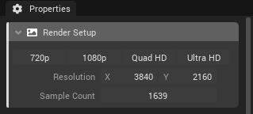
The settings of the final renders. They are saved with the project. The settings of the viewport and of the program are in the Options menu.
- Resolution and the resolution presets (720p, 1080p, Quad HD, Ultra HD): the size of the rendered images.
- Sample Count: the number of samples per pixel. More samples give a less noisy image, but the render takes longer.
The length of the animation (Frames), the range to render (Render Range) and the playback speed (FPS) are also stored in this node, but you set them in the playback bar at the bottom of the Timeline window.
Camera Setup Node
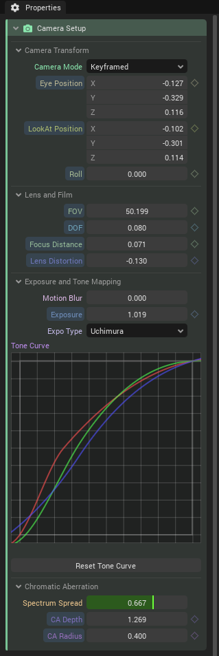
The position of the camera, the lens, the exposure and the tone mapping. You usually move the camera in the viewport rather than here.
Camera Transform
- Camera Mode: Keyframed: the camera follows its keys on the Timeline. Free: the camera ignores its keys and uses the values set here or in the viewport. Moving the camera in the viewport switches a keyed camera to Free automatically. Renders use the current mode.
- Eye Position: the position of the camera (X, Y, Z).
- LookAt Position: the point the camera looks at. Orbiting in the viewport rotates around this point.
- Roll: rotation of the camera around its view direction, in degrees.
Lens and Film
- FOV: the field of view in degrees. Smaller values zoom in.
- DOF: the amount of depth of field blur. 0 means everything is sharp.
- Focus Distance: the distance of the sharp plane from the camera. It matters only if DOF is above 0. Double-click the fractal with the right mouse button to focus on that point.
- Lens Distortion: barrel (positive) or pincushion (negative) distortion. 0 means no distortion.
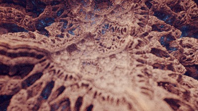 |
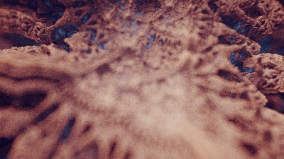 |
|
|---|---|---|
| DOF: 0 | DOF: 1 | DOF: 3 |
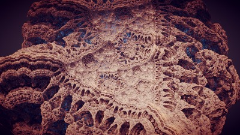 |
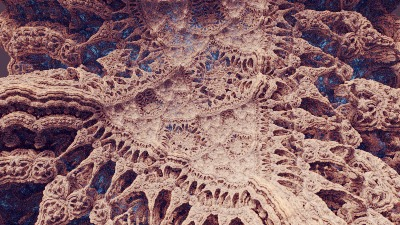 |
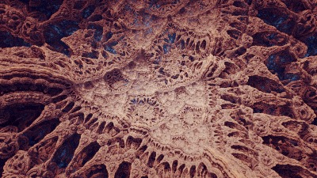 |
|---|---|---|
| Lens Distortion: 0.15 | Lens Distortion: 0 | Lens Distortion: -0.5 |
Exposure and Tone Mapping
- Motion Blur: the shutter time as a fraction of a frame. 0: no motion blur, 1: the shutter is open for the whole frame. It is visible only in an animation, where things move during the frame.
- Exposure: the brightness of the image before tone mapping. Changing it does not restart the refinement.
- Expo Type: the tone mapping curve that compresses the bright (HDR) image into the displayable range. None: no compression, the highlights clip. Exponential, Reinhard: soft roll-off of the highlights. Lottes, Uchimura: filmic curves with more contrast. Changing it recompiles the shaders.
- Tone Curve: final color adjustment after tone mapping. The red, green and blue curves set the brightness of each channel, the fourth curve sets the saturation as a function of the brightness. Reset Tone Curve restores the neutral curves.
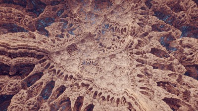 |
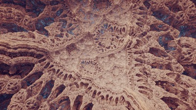 |
|
|---|---|---|
| Expo Type: None | Expo Type: Reinhard | Expo Type: Uchimura |
Chromatic Aberration
A real lens bends the different wavelengths (colors) of light slightly differently. Kaleo2 simulates this with a spectral camera.
- Spectrum Spread: how much the rainbow colors blend into each other. 0: vivid rainbow colors but more noise. 1: no colors, only a soft blur, with less noise. It has a visible effect only if CA Depth or CA Radius is not 0.
- CA Depth: how much the focal plane shifts with the wavelength. Higher values give more colorful blur in the out-of-focus areas (with DOF).
- CA Radius: how much the field of view changes with the wavelength. Higher values give more color fringing toward the edges of the image.
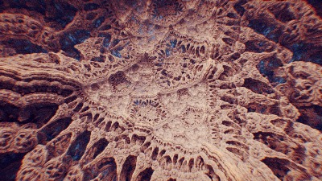 |
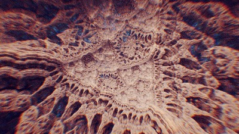 |
|
|---|---|---|
| CA Radius: 0 | CA Radius: 5 | CA Radius: 12 |
Light Setup Node
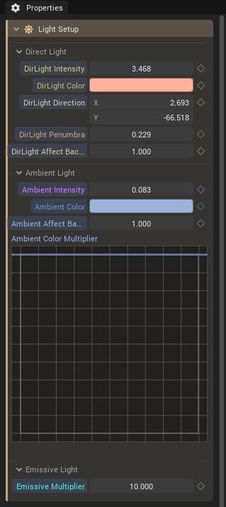
The fractal is lit by two kinds of light: a directional light (like sunlight) and an ambient light that comes from every direction (like skylight). The emissive (glowing) parts of the fractal are light sources too.
Direct Light
- DirLight Intensity: the brightness of the directional light.
- DirLight Color: the color of the directional light.
- DirLight Direction: the direction of the light rays in degrees: the horizontal angle around the Z axis, and the elevation. The light comes from the opposite side.
- DirLight Penumbra: the sharpness of the light. Low values: a large light source with soft shadows. High values: a small light source with crisp shadows.
- DirLight Affect Background: how much the light source itself is visible in the background. 0: not visible.
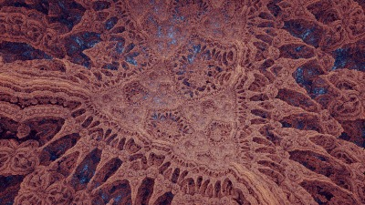 |
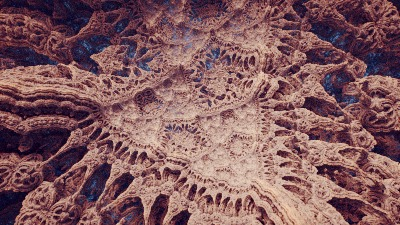 |
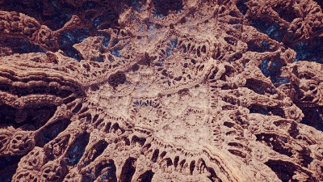 |
|---|---|---|
| DirLight Penumbra: 0.05 | DirLight Penumbra: 0.23 | DirLight Penumbra: 1.5 |
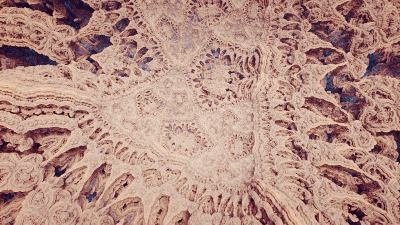 |
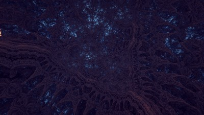 |
|
|---|---|---|
| DirLight Direction: 2.7, -66.5 | DirLight Direction: 60, -25 | DirLight Direction: -120, -25 |
Ambient Light
- Ambient Intensity: the brightness of the ambient light.
- Ambient Color: the color of the ambient light.
- Ambient Affect Background: how much the ambient light is visible as the background color. 0: black background.
- Ambient Color Multiplier: tints the ambient light by direction: the left side of the curves is the light coming from below, the right side the light from above. Use it for a sky gradient.
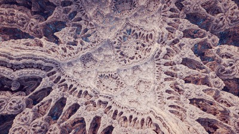 |
||
|---|---|---|
| Ambient Intensity: 0 | Ambient Intensity: 0.083 | Ambient Intensity: 0.4 |
Emissive Light
- Emissive Multiplier: multiplies the emissive colors set in the Fractal Material. 0 turns off every emission.
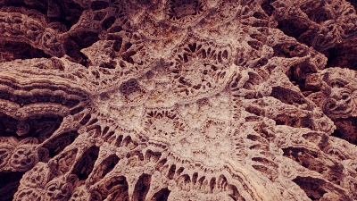 |
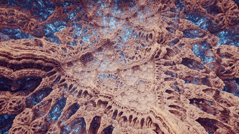 |
|
|---|---|---|
| Emissive Multiplier: 0 | Emissive Multiplier: 10 | Emissive Multiplier: 40 |
Fractal Setup Node
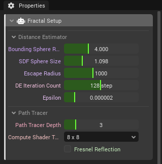
The quality and the speed of the fractal rendering: the precision of the distance estimator and the path tracer. These settings cannot be animated.
Distance Estimator
Bounding Sphere Radius: the radius of a sphere that contains the whole fractal. The rays are traced only inside it, which saves time. If it is too small, parts of the fractal are cut off; if it is too large, rendering is a bit slower.
SDF Sphere Size: the fractal starts as a sphere with this radius, which the iterations fold, mirror and scale down. With many iterations the sphere becomes very small and the fractal geometry itself determines the shape, so this setting hardly matters. With few iterations it changes the thickness of the shapes.
Escape Radius: the iteration stops early for a point that gets farther from the origin than this. Lower values can be faster but less stable; increase it if you see artifacts.
DE Iteration Count: the number of iterations. More iterations give more detailed geometry, but more calculations. Changing it recompiles the shaders.
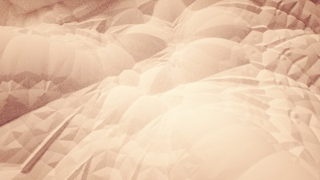 |
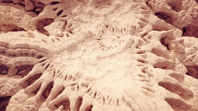 |
|
|---|---|---|
| Iteration Count: 10 | Iteration Count: 16 | Iteration Count: 128 |
Epsilon: how close a ray has to get to the fractal to count as a hit. Computers work with numbers of limited precision, so a small bias is needed to avoid numerical errors. Larger values render faster, because the rays stop earlier, but the fine details melt together.
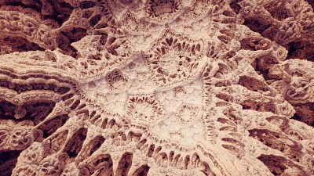 |
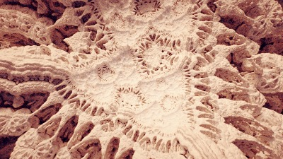 |
|
|---|---|---|
| Epsilon: 0.000002 | Epsilon: 0.00002 | Epsilon: 0.0001 |
Path Tracer
Path Tracer Depth: the number of times a light ray can bounce (2–8). More bounces reproduce the indirect light (global illumination) better, but take more calculations. Changing it recompiles the shaders.
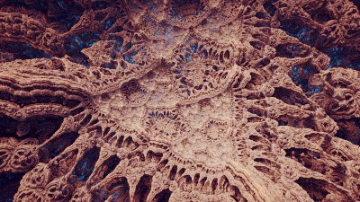 |
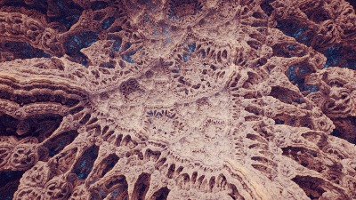 |
|
|---|---|---|
| Path Tracer Depth: 2 | Path Tracer Depth: 4 | Path Tracer Depth: 8 |
Compute Shader Thread Count: it does not change the image, only the rendering speed. The GPU runs the threads in fixed-size batches of 32 or 64, and this setting sets the size of a thread group: 8 x 8 = 64 or 16 x 16 = 256 threads. 8 x 8 is usually the better choice, but it depends on your GPU and on the fractal, so it is worth trying both.
Fresnel Reflection: when enabled, the surfaces reflect more light at grazing angles, like most real materials do. Changing it recompiles the shaders.
Fractal Geometry Node
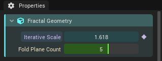
The shape of the kaleidoscopic IFS fractal. The node itself has two settings, its children (the bones) hold the transformations. See How a Kaleo Fractal Is Built for how they work together.
Iterative Scale: the scale factor applied in every iteration, after the folds. It must be greater than 1. Its effect is a bit like an erode/dilate filter in image editing: higher values eat the surface away into thinner, sparser structures with more holes, lower values fill it up into solid masses. The most interesting forms are usually in a narrow band between the two, so change it in small steps. It also changes the size of the whole fractal.
Fold Plane Count: how many fold (mirror) planes are applied in every iteration (2–7). Only the first N Fold Plane nodes are used; the others are greyed out in the Scene Tree. More planes give a more complex symmetry. Changing it recompiles the shaders.
The node menu of Fractal Geometry has a Merge All Transforms command, see Scene Tree Window.
Pre Transform, Post Transform and Fold Plane Nodes
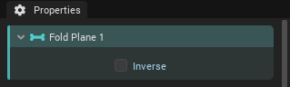
These nodes (bones) hold the transformations of the fractal. Each bone has a list of transform nodes, applied from top to bottom:
- Pre Transform: places the whole fractal, but it is also built into the iteration, so it changes the shape as well.
- Post Transform: applied in every iteration, between the folds and the scaling.
- Fold Plane 1–7: each one is a mirror plane. It starts as the plane through the origin with its normal pointing along +Z (the XY plane); its transformations rotate and move it. In every iteration, the plane mirrors the points that are behind it to its front side.
Inverse: applies the inverse of the combined transformations of the bone.
Add transformations with New... in the node menu (right-click the bone, or click its ... button).
Transform Nodes
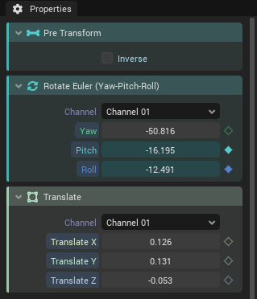
Each transform node is one rotation or translation. The order of the transforms matters: they are applied from top to bottom. You can reorder them in the Scene Tree by dragging, or with Move Up and Move Down in the node menu.
Every transform has a Channel: the Fractal Mixer channel that controls its strength. The values of the transform are multiplied by the weight of the channel: 0 means no effect, 1 means the full effect.
| Transform | Settings |
|---|---|
| Rotate Euler (Yaw-Pitch-Roll) | Yaw, Pitch, Roll: rotations around the Y, X and Z axis, in degrees. |
| Rotate Quaternion (Axis-Angle) | Axis X, Y, Z: the axis of the rotation. Angle: the angle of the rotation around the axis, in degrees. |
| Rotate Gibbs (Axis) | Axis X, Y, Z: a single vector: its direction is the axis of the rotation, its length is the angle (1 = 180 degrees). |
| Translate | Translate X, Y, Z: moves along the axes. |
Older projects may also contain PlaneDirXYZ and PlaneDirUV transforms. They orient a fold plane directly: PlaneDirXYZ with a direction vector (only its direction matters), PlaneDirUV with two angles (U around the Z axis and the V elevation, in degrees). They cannot be added to new projects.
Fractal Mixer Node
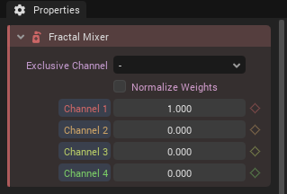
Blends between groups of transformations. Every transform belongs to one of four channels, and the channel weights set here scale how strongly those transforms are applied. Animate the weights to morph between shapes. By default Channel 1 has the weight 1 and the others 0, so the new transforms (Channel 1) have their full effect.
- Exclusive Channel: shows only one channel: it gets the full weight and all the other channels are switched off, whatever their curves are. -: the channel curves are used.
- Normalize Weights: when enabled, the weights are scaled so that their sum is 1.
- Channel 1–4: the weight of the channel. Every transform assigned to it is scaled by this value: 0 = no effect, 1 = full effect.
Fractal Material Node
The color of the fractal. It has one child node for each fold plane; the colors of the unused planes are greyed out.
Fold Plane Color Nodes
These nodes color the fractal by how often a point was mirrored by the given fold plane during the iterations. The diffuse colors of all the planes are multiplied together, the emissive colors are added. Because the diffuse colors are multiplied, coloring several planes darkens the image quickly; it often works better to tint one or two planes and leave the others white.
Diffuse (the color of the surface):
- Diffuse Start: sets when the second color starts to appear. At 0 it appears right away, at 1 much later (maybe never).
- Diffuse Fade: how gradual the transition between the two colors is. At 0 the color changes abruptly.
- Diffuse Color: the two colors the material blends between, based on Start and Fade.
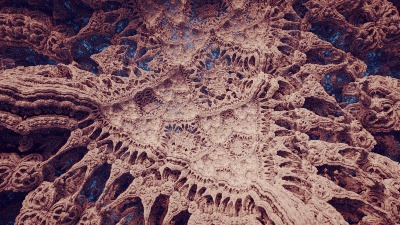 |
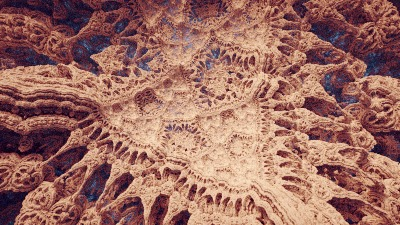 |
|
|---|---|---|
| Fold Plane 1, Diffuse Start: 0 | Diffuse Start: 0.33 | Diffuse Start: 0.7 |
Emissive (the light emitted by the surface):
- Emissive Start, Emissive Fade, Emissive Color: the same as the diffuse settings, for the glow. Black means no emission. The overall strength is the Emissive Multiplier of the Light Setup node.
Time Remap Node
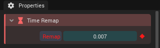
Changes the speed of the animation set on the Timeline.
Remap: maps the time of the Timeline (horizontal axis) to the time of the animation (vertical axis). A diagonal line is the normal speed. Flatter parts slow the animation down, steeper parts speed it up. Select the Remap curve and edit it on the Timeline.